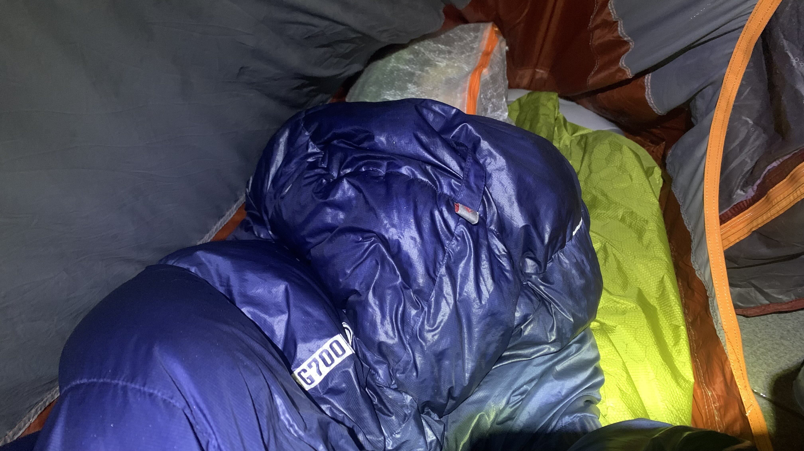
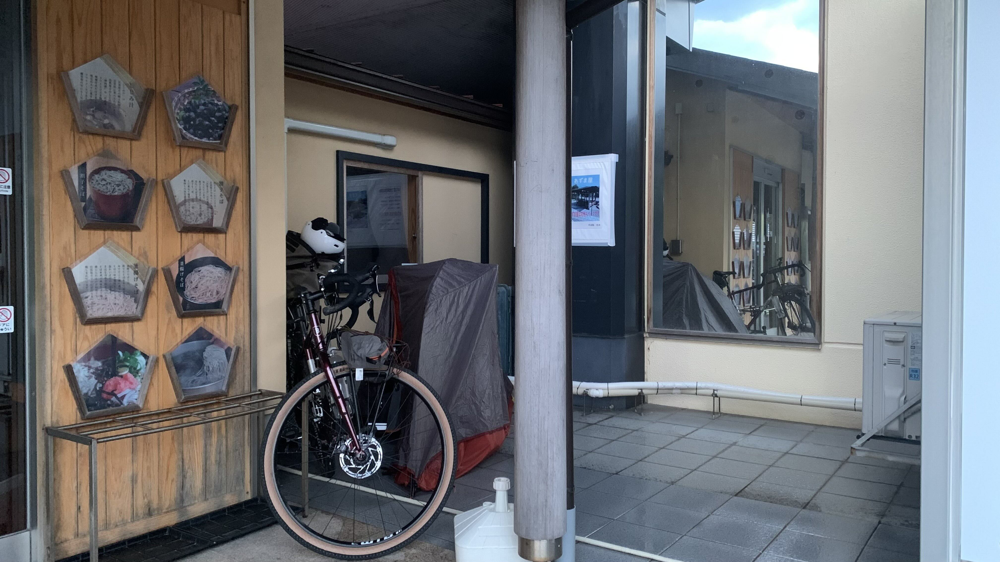
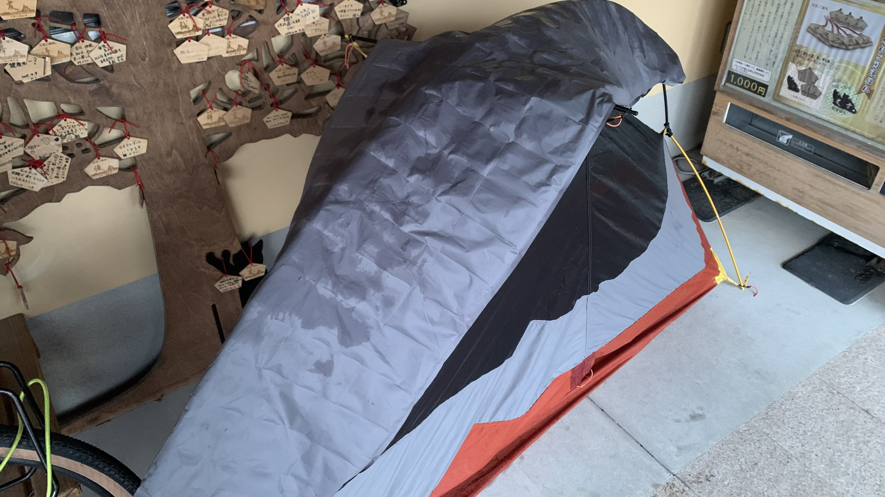
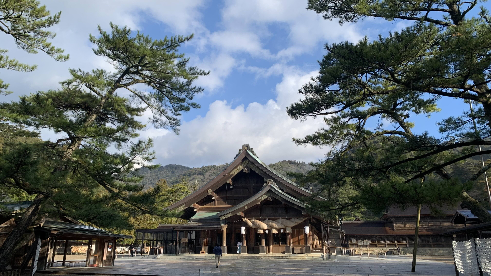
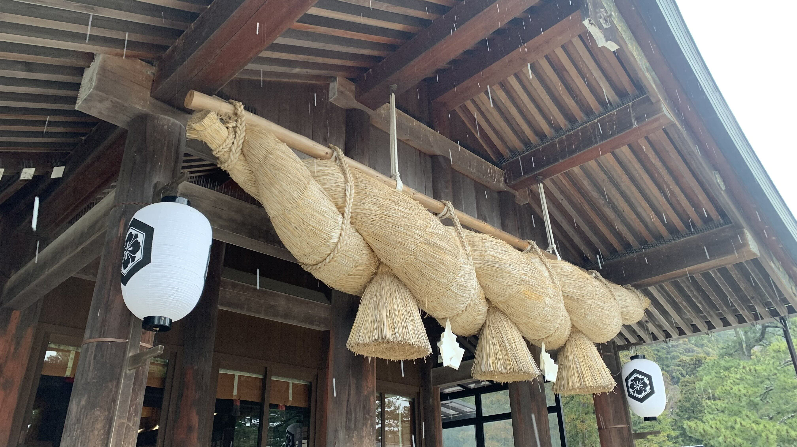
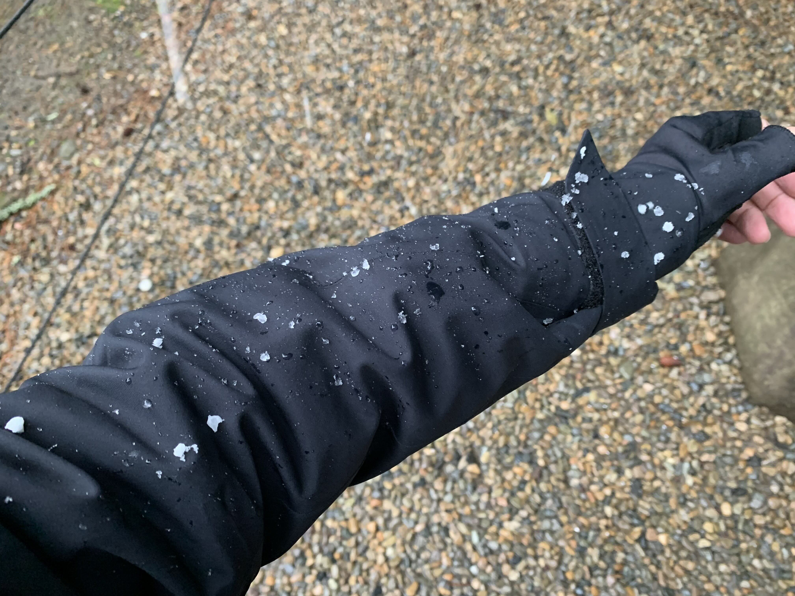
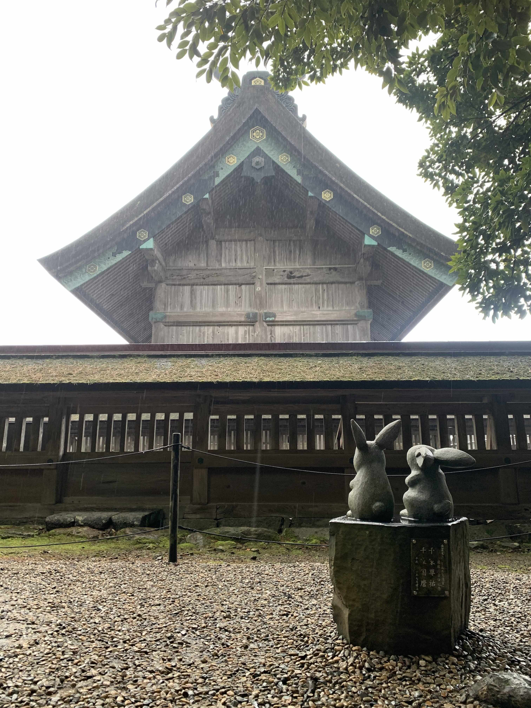
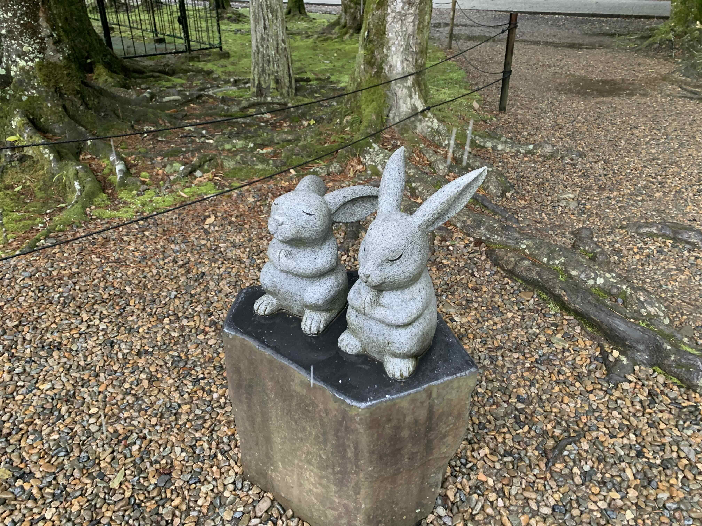
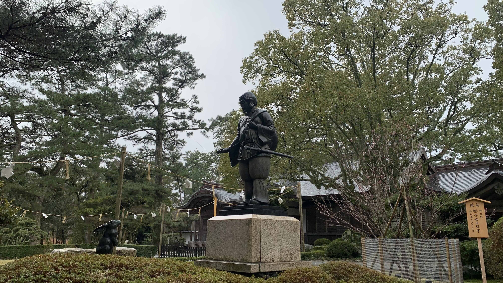
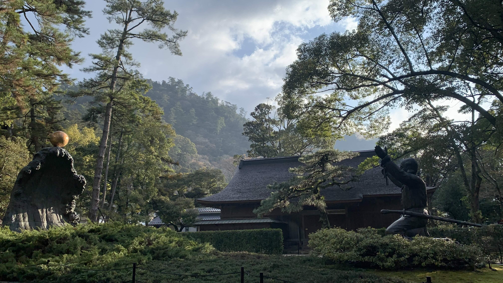

k-Day 009｜山和海都不知道我經歷了什麼
整夜大風大雨，睡睡醒醒，沒有氣密窗的時候人類是怎麼入眠的呢？
昨晚買的暖暖熱到我脫了外套，完全沒有發現睡袋濕了。

迎風側的內帳滲水。

睡墊拉開底部已經有幾個小水窪。

昨晚停在大社休息站的建築角落，顯然沒能擋住側風。 
大社六點就開始參拜，零星的車泊遊客已經起床。所有的裝備都濕濕的收起來，不該貪圖便宜的，也許離開日本前至少要買個好一些的露宿袋。

體感溫度又回到-3度，氣象顯示今天有大風。看來山上海邊都有不同的困難呢。先買瓶170元的觀光景點咖啡壓壓驚，趁著九點團客到來以前參拜。

好隆重啊。

這個稻草不知道是什麼作用。

又下雪？沒關係了，就當是迎賓禮吧。

繞道大社背後，竟然看到兩隻仰望著大社後牆的兔子背影。

繞到前面一看，他們兩一隻低頭一隻仰頭，闔著眼，雙手合十虔誠乞禱著。一想到他們會一直在外牆後的角落維持這個姿勢，直到有人把他們搬走，就覺得太浪漫了啊。只是救了你一次，不至於這樣吧？這已經是把大國主大神和兔子當成戀愛番來演了吧。

大社裡的兔子散落各地，當然也有和大國主大神的互動雕像，認真數起來，數量應該不比白兔神社裡的兔子少。

另一個有名的傳說則是原本統治日本的大國主大神，將統治權讓給天照大神後代的國讓故事。

早餐一樣在星巴克解決。吃了兩個三明治和一杯咖啡。

再加點一份三明治。

今天走的是海岸道路，大概的意思就是風很大。

很快抵達第一個休息站多崎。手已經冷到發麻刺痛了。

看看這些旗子飄揚的程度。
即便看來是順風也並不輕鬆，風速過大車身一直晃動，路旁還出現橫風注意的警告牌。據說是海上的西北風直直往身上吹的概念，尤其在隧道之間或者防風林消失的瞬間特別驚人。

不過沿路都有這樣鋪設良好的自行車人行道。
騎起來比國道九號安心不少。這路面平整到我想知道施工的人們是抱著怎樣的心在工作的。
曾經在金閣寺看到裡面的人員在修剪青苔。他是用一個小小的抹刀似的工具，一片一片削出符合石頭縫隙比例造型的青苔。當時真的非常震驚，我認為這是能夠在金閣寺體驗到沒有時間的狀態的原因。那些松樹和青苔都是永恆的那樣的狀態，連一根樹枝也不會改變似的。

這邊的房子使用紅色的屋瓦，跟日本其他地區看到的都不一樣，不知道是否當地生產的特色。

看著這樣的海，不知不覺到了大田，比預定的時間還早了半個多小時。

我就是在這裡失去了判斷的。

這區有很多高市的海報，我記得離開京都府之前也很常見，不知何時開始變成石破海報，這兩天才又變成高市。

抵達銀山休息站，很可惜看來沒有什麼可逛的，既然比預定的時間還早，也許今天可以繼續趕路，午餐就先略過。

在這條路上迎來強勁的側風，與其說是側風，不如說是山跟海之間形成的漩渦。長長的下坡一開始還試著抓穩把手壓低重心，連一半的坡都還沒下來就已經抖到連兩隻腳站著都撐不住車子。

洞口聚集了一群從海上被吹飛進來的雪，在半空中不斷地強烈旋轉。有些被甩到左側的樹上，有些往天空噴，有些則被吸進隧道裡。
是因爲聚集了這些雪花，才命名為湊隧道嗎？

這段路是讓單車在右側，身體在左邊靠著，一步一步往前推進。
今天經過無數個隧道，大部分都是走在水溝蓋推車經過的。不知道是為了穩定中心消耗過多能量，還是真的太冷了。今天總共下了四次雪，幸好外套的防水能力還是足夠的。總之我的體力透支了。
為什麼中午不吃飯呢？

這是大大的順風，一般來說就連上坡都能被推著上去的，即便如此我也踩不動了。

五十猛是風速五十公里有夠猛的意思嗎？
大概是下午三點半左右，晚了半小時抵達仁萬休息站。好想就直接在那裡睡覺。可是睡袋濕了，這種天氣也許會冷死。
發現什麼照片也沒拍，想必靈魂已經脫離肉體。
吃了一塊炸雞和一條有腥味的炸魷魚搭配一瓶奶茶，在休息區坐了一小時左右，我終於還是出發了。

然後又後悔了。回到國道九號進入山區立刻開始飄雪。風一樣強勁。一個接著一個的隧道，一個又一個上坡。天色也漸漸轉暗。
就在心態完全崩潰之際。

溫泉津終於到了嗚嗚嗚。夕陽好美，我好冷好餓啊🥹

抵達民宿停車場，趕在太陽下山以前。

這些山和海都不知道我今天經歷了什麼，如此安逸地面對著我。

今晚的民宿。

相當不錯呢。
躺上床吹著暖氣，試著回想今天發生了什麼。早上的大社根本是另一個世界了。我究竟怎麼抵達的呢？
今日花費：罐裝咖啡 170、星巴克早餐 1702、住宿 3121